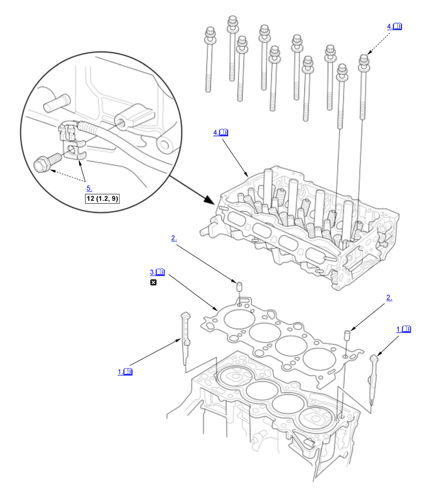

Cylinder Head Removal and Installation (K20C1) (2017 2018 2019 2020 2021): Installation: Procedure
Numbered call-outs in figure pertain to list numbers in following procedure.

Courtesy of HONDA, U.S.A., INC. |
Detailed information, notes, and precautions |
| Torque: N.m (kgf.m, lbf.ft) | |
 |
Replace |
- Coolant Separator - Install
NOTE: Install new coolant separator in the engine block whenever the engine block is replaced.
- Dowel Pin - Install
- Cylinder Head Gasket - Install
NOTE: Clean the cylinder head and the engine block surface.
- Cylinder Head - Install
1. Set the crankshaft to top dead center (TDC). Align the TDC mark (A) on the crankshaft sprocket with the pointer (B) on the engine block. 2. Install the cylinder head on the engine block.
3. Measure the diameter of each cylinder head bolt at point A and point B. 4. If either diameter is less than 10.6 mm (0.417 in), replace the cylinder head bolt.
When the new cylinder head bolt is installed 5. Apply new engine oil to the threads and under the bolt heads of all cylinder head bolts.
6. Torque the cylinder head bolts in sequence to 40 N.m (4.1 kgf.m, 30 lbf.ft). Use a beam-type torque wrench. When using a preset click-type torque wrench, be sure to tighten slowly and do not overtighten. If a bolt makes any noise while you are torquing it, loosen the bolt and go back to step 5.
7. After torquing, tighten all cylinder head bolts in three steps (90° per step) in the numbered sequence shown.
NOTE:
- Remove the cylinder head bolt if you tightened it beyond the specified angle, and go back to step 3 of the procedure. Do not loosen it back to the specified angle.
- Tighten the cylinder head bolts to the specified angle, using a commercially available angle gauge.
When the cylinder head bolt is reused 8. Apply new engine oil to the threads and under the bolt heads of all cylinder head bolts.
9. Torque the cylinder head bolts in sequence to 40 N.m (4.1 kgf.m, 30 lbf.ft). Use a beam-type torque wrench. When using a preset click-type torque wrench, be sure to tighten slowly and do not overtighten. If a bolt makes any noise while you are torquing it, loosen the bolt and go back to step 8.
10. After torquing, tighten all cylinder head bolts in three steps (80° per step) in the numbered sequence shown.
NOTE:
- Remove the cylinder head bolt if you tightened it beyond the specified angle, and go back to step 3 of the procedure. Do not loosen it back to the specified angle.
- Tighten the cylinder head bolts to the specified angle, using a commercially available angle gauge.
- Ground Cable - Install
- Rocker Arm Assembly - Install
- Camshaft - Install
- Cam Chain - Install
- Valve Clearance - Adjust
- Cylinder Head Cover - Install
- Injector - Install
- High Pressure Fuel Pump - Install
- Intake Manifold - Install
- Thermostat Housing - Install
- Vacuum Pump Holder - Install
- Charge Air Cooler Pipe - Install
NOTE: Make sure to review the hose band precautions before installing the charge air cooler pipe(s).
- EVAP Canister Purge Valve, Purge Joint, and Purge Pipe - Install
- VTC Strainer - Install
- VTC Oil Control Solenoid Valve B - Install
- Turbocharger - Install
- TWC Assembly - Install
- 12 Volt Battery Base - Install
- Air Cleaner - Install
- 12 Volt Battery - Install
- After Installation - Check
1. After installation, check that all tubes, hoses, and connectors are installed correctly. - Engine Coolant - Refill
- Fuel Leak (Low Pressure Side) - Check
1. Turn the vehicle to the ON mode, but do not start the engine. After the fuel pump runs for about 2 seconds, the fuel line will be pressurized. Repeat this two or three times, then check for fuel leakage. - Fuel Leak (High Pressure Side) - Check
- Idle Speed - Inspect
- Ignition Timing - Inspect